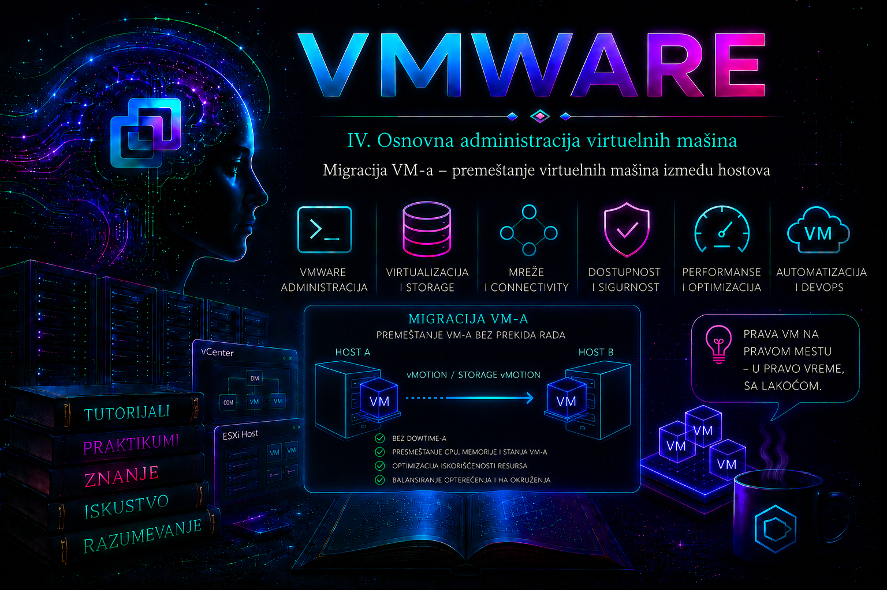

VMware

Migracija virtuelne mašine je kontrolisana promena njenog mesta izvršavanja, mesta čuvanja ili oba resursa. Ona administratoru omogućava da isprazni ESXi host radi održavanja, ukloni storage sistem iz upotrebe, rasporedi opterećenje, zameni hardver i reorganizuje infrastrukturu bez ponovne izgradnje servera. Kada su ispunjeni uslovi za vSphere vMotion, uključena virtuelna mašina može promeniti host uz veoma kratak zastoj izvršavanja, koji aplikacija i korisnici najčešće ne primete. Ipak, migracija nije samo izbor stavke Migrate: to je promena koja istovremeno dodiruje compute, mrežu, storage, bezbednosne politike, licence i operativnu odgovornost.
U prethodnim lekcijama uređivale smo životni ciklus VM-a, snapshot-e i standardne serverske slike. Ovde se fokus pomera sa jednog objekta na njegove infrastrukturne zavisnosti. Lekcija daje operativni pregled svih važnih vrsta migracije i priprema čitaoca za kasniju, dublju lekciju o vMotion mreži i mehanizmu žive migracije. Cilj nije samo da migracija bude prihvaćena u čarobnjaku, već da administrator unapred dokaže kompatibilnost, nadzire tok, potvrdi stanje servisa posle promene i ume bezbedno da reaguje ako operacija ne uspe.
Šta se migracijom zaista menja
Virtuelna mašina ima najmanje tri važne kategorije zavisnosti: compute resurs na kome se izvršava, datastore na kome su njene datoteke i virtuelnu mrežu preko koje komunicira. Migracija može menjati samo jednu od tih kategorija ili više njih. Inventarski folder, resource pool, DRS pravila, VM Storage Policy, enkripcioni ključevi, backup poslovi, monitoring i CMDB zapisi mogu ostati nepromenjeni, ali se pre svake migracije mora proveriti da li njihova pravila važe i na odredištu.
| Vrsta operacije | Stanje VM-a | Šta se menja | Tipična upotreba | Ključni uslov |
|---|---|---|---|---|
| vSphere vMotion | Uključena | Host odnosno compute resource | Održavanje hosta, ručno ili DRS balansiranje | CPU, mrežna i VM kompatibilnost; odredište mora pristupati datotekama VM-a |
| Storage vMotion | Uključena | Datastore, format diska ili storage politika | Evakuacija datastore-a, promena klase storage-a, uklanjanje prostora uskog grla | Dovoljan kapacitet, podržano odredište i usklađena VM Storage Policy |
| Kombinovana hot migracija | Uključena | Compute i storage u jednoj operaciji; po potrebi mrežno mapiranje | Prelazak na host koji ne vidi izvorni datastore ili veća reorganizacija | I compute i storage provere moraju proći |
| Cold migration | Isključena | Host, datastore ili oba | Kada prekid rada postoji ili hot migracija nije podržana | Planirani zastoj i pouzdano odredište |
| Suspended migration | Suspendovana | Host i/ili storage, uz prenos suspendovanog stanja | Retki kontrolisani scenariji u kojima je suspendovanje prihvatljivo | CPU kompatibilnost za nastavak sačuvanog stanja |
| Cross vCenter vMotion | Uključena ili isključena, prema funkciji i licenci | vCenter domen upravljanja, compute, storage, mreža i često inventarski kontekst | Konsolidacija, migracija data centra ili prelazak između administrativnih domena | Podržane verzije, licence, povezivost, identiteti i mapiranje ciljnih resursa |
Izraz Enhanced vMotion se u starijim materijalima često koristio za istovremenu promenu hosta i datastore-a bez zajedničkog storage-a. U savremenom vSphere Client-u operativno precizniji naziv je Change both compute resource and storage. Taj izraz ne treba mešati sa Enhanced vMotion Compatibility (EVC), koji je mehanizam CPU kompatibilnosti.
Kako radi živa migracija
Kod vMotion migracije izvorni host prvo uspostavlja vezu sa ciljnim hostom i proverava da li odredište može da izvršava VM. Dok VM i dalje radi, stranice njene memorije kopiraju se preko vMotion mreže. Stranice koje gost ponovo izmeni označavaju se kao „dirty” i prenose u narednim prolazima. Kada preostalo stanje postane dovoljno malo, VM se veoma kratko zaustavlja, prenose se poslednje memorijske stranice, stanje virtuelnih uređaja i CPU-a, a izvršavanje se nastavlja na ciljnom hostu. Mreža obaveštava fizičku i virtuelnu switching infrastrukturu o novom položaju virtuelnog NIC-a, tako da postojeće sesije mogu da se nastave.
Ovaj pre-copy model objašnjava zašto uključena VM sa velikom količinom RAM-a i veoma visokom stopom menjanja memorije može dugo da se migrira ili da ne uspe da konvergira u očekivanom vremenu. Brzina nije određena samo veličinom RAM-a, već odnosom raspoloživog vMotion protoka i stope kojom workload menja memoriju. Storage vMotion, sa druge strane, prenosi VM home i virtuelne diskove dok I/O ostaje aktivan, prati blokove promenjene tokom kopiranja i u završnoj fazi prebacuje VM na nove datoteke. Kombinovana migracija mora koordinisati oba toka.
Preduslovi i kompatibilnost pre migracije
Čarobnjak izvodi compatibility check, ali taj korak nije zamena za administratorski pre-check. Automatska provera potvrđuje tehničke uslove poznate vCenter-u; ona ne zna da li je izabrani prozor promene odobren, da li monitoring prati novu lokaciju, da li backup politika obuhvata ciljni datastore ili da li aplikacioni tim očekuje promenu. Pre pokretanja operacije treba proveriti sledeće slojeve.
Compute i CPU
- Ciljni ESXi host mora biti povezan sa odgovarajućim vCenter Server-om, u stanju koje dozvoljava prijem VM-a i sa dovoljno slobodnih CPU i memorijskih resursa.
- Host mora podržavati verziju virtuelnog hardvera, guest OS i sve virtuelne uređaje konkretne VM. VMware Compatibility Guide i proizvodna dokumentacija imaju prednost nad pretpostavkom da „noviji host podržava sve”.
- Aktivni CPU skup instrukcija VM-a mora biti dostupan na odredištu. Intel i AMD nisu međusobno vMotion kompatibilni. Različite generacije istog proizvođača obično zahtevaju odgovarajući EVC baseline.
- CPU ili memory reservation mora moći da se zadovolji na odredišnom hostu odnosno resource pool-u. Nominalno slobodan RAM nije dovoljan ako admission ili reservation pravila sprečavaju smeštaj.
- DRS affinity, anti-affinity i VM-Host pravila moraju dozvoljavati cilj. Pravilo tipa „must run” je ograničenje, dok „should run” može dati upozorenje zavisno od okolnosti.
Mreža za vMotion i mreža virtuelne mašine
- Svaki učesnik u vMotion toku mora imati ispravno konfigurisan VMkernel adapter sa omogućenim vMotion servisom i IP povezivošću do odgovarajućeg peer-a.
- MTU mora biti dosledan duž čitave putanje. Jumbo frames nisu obavezni, ali ako se koriste, moraju raditi end-to-end; delimično podešen MTU stvara teško uočljive prekide i pad protoka.
- Za produkciju se preporučuje namenski VLAN i adekvatan fizički kapacitet, uz redundansu uplink-ova prema dizajnu. vMotion saobraćaj može sadržati memorijsko stanje workload-a i zato mora biti izolovan i zaštićen.
- Ciljni host mora imati odgovarajuću standardnu ili distribuiranu port grupu. Isti naziv port grupe nije dokaz da su VLAN, teaming, security i shaping politike iste.
- Ako se menja vCenter ili mrežni domen, mrežno mapiranje mora očuvati L2/L3 dostupnost koju aplikacija očekuje. Promena port grupe može promeniti VLAN i time izazvati stvaran aplikacioni prekid iako je sama migracija uspešna.
Storage, datoteke i politike
- Za compute-only vMotion svi hostovi moraju imati pristup datastore-ovima na kojima se nalaze VM home i diskovi, osim kada se koristi podržana migracija bez zajedničkog storage-a.
- Za storage migraciju proveravaju se slobodan prostor, maksimalne veličine, protokol, putanje, latencija, podržani tipovi diskova i eventualni RDM ili posebni uređaji.
- Ciljni datastore ili datastore cluster mora zadovoljiti VM Storage Policy. Stanje noncompliant posle migracije nije samo estetsko upozorenje već dokaz da zahtevana zaštita ili performansna karakteristika možda nije ostvarena.
- Snapshot lanac, Changed Block Tracking, backup proxy način rada, replikacija i zaključane datoteke mogu uticati na trajanje ili podršku. Aktivni backup ili snapshot konsolidacija ne treba da se ukrštaju sa migracijom bez provere proizvoda i operativne politike.
- Storage vMotion nije backup. Greška ili korupcija u izvornom guest fajl-sistemu prenosi se na odredište, a migracija ne stvara nezavisnu tačku oporavka.
Virtuelni uređaji, bezbednost i zavisnosti
- Host uređaji vezani direktno za VM, kao što su određeni PCI passthrough, DirectPath I/O, vGPU, SR-IOV, lokalni USB i drugi uređaji, mogu ograničiti ili onemogućiti migraciju. Tačan status zavisi od uređaja, načina konfiguracije, verzije ESXi-ja i podrške proizvođača.
- CD/DVD uređaj povezan na ISO sa lokalnog diska administratorovog računara ili lokalnog datastore-a može blokirati migraciju. Najbezbednije je odvojiti nepotrebne medije pre promene, uz prethodnu proveru da ih gost ne koristi.
- Za enkriptovanu VM cilj mora imati pristup odgovarajućem key provider-u i podržavati primenjene enkripcione i bezbednosne politike. Migraciju ne treba koristiti kao improvizovani način zaobilaženja KMS ili Native Key Provider kontrole.
- Opcija enkripcije vMotion saobraćaja može biti postavljena na Disabled, Opportunistic ili Required, u zavisnosti od verzije i konfiguracije. Required odbija odredište koje ne podržava potrebnu zaštitu; Opportunistic koristi enkripciju kada je obe strane podržavaju.
- Administrator mora imati odgovarajuće privilegije nad izvornom VM, ciljnim resource pool-om ili hostom, datastore-om i mrežom. Najmanje privilegije treba definisati ulogom, a ne dodelom širokog administratorskog naloga.
Enhanced vMotion Compatibility – EVC
EVC izlaže VM-ovima zajednički CPU baseline koji podržavaju svi hostovi u klasteru. Noviji procesor time ne „postaje sporiji procesor”, već se gostu maskiraju instrukcije koje nisu deo izabranog baseline-a. To omogućava da aktivno CPU stanje VM-a bude prihvatljivo na drugom hostu iste CPU porodice. EVC ne omogućava vMotion između Intel i AMD procesora i ne rešava neusaglašen BIOS, firmware, virtuelni uređaj, mrežu ili storage.
EVC se najbolje planira pre prvog uključivanja VM-ova u klasteru. Kada se baseline snizi, već uključena VM može i dalje imati aktivne instrukcije koje je videla pri poslednjem potpunom power-on ciklusu. Guest restart nije isto što i isključivanje i ponovno uključivanje VM-a: da bi VM dobila novi CPU feature set, može biti potreban potpuni power cycle. Zbog toga se EVC ne menja impulsivno radi jedne neuspele migracije. Najpre se uporede model procesora, microcode, BIOS postavke, cluster EVC i per-VM EVC, zatim se planira uticaj na sve workload-e.
Per-VM EVC je dostupan za podržane verzije virtuelnog hardvera i scenarije, ali ni on ne uklanja potrebu da svaki ciljni host podrži izabrani baseline. Broadcom KB navodi da je odgovarajuća VM hardware verzija preduslov za prikaz i korišćenje ove opcije; zato se tačan uslov uvek proverava za instaliranu vSphere verziju pre promene virtuelnog hardvera.
Cross vCenter vMotion
Cross vCenter migracija pomera ili, u pojedinim tokovima, klonira VM između vCenter Server instanci. Ona je korisna pri konsolidaciji data centara, promeni SSO ili administrativnog domena i migraciji ka drugoj infrastrukturi. Ovo nije „običan vMotion sa dužom mrežom”: menja se domen upravljanja, pa se moraju mapirati datacenter, cluster ili host, resource pool, datastore, mreža, folder i po potrebi storage politika.
Za vSphere 8 dokumentacija navodi da source i destination vCenter Server i ESXi hostovi za podržane cross-vCenter tokove moraju zadovoljiti minimalne verzijske zahteve; vrsta operacije i licenca zavise od konkretnog izdanja i načina pokretanja. Stoga se licenca ne zaključuje iz starog tutorijala: proveravaju se aktuelni Broadcom Product Guide, TechDocs za instaliranu verziju i pravo korišćenja organizacije. Ako vCenter instance nisu u istom SSO domenu, koriste se odgovarajući kredencijali ciljnog sistema i proverava mrežna dostupnost svih potrebnih management i vMotion veza. Identiteti, tagovi, custom attributes, alarmi, backup registracije, distribuirani switch objekti i politike ne moraju se automatski preneti sa istim značenjem.
Projektovanje bezbedne vMotion mreže
vMotion mreža treba da ima dovoljno kapaciteta, predvidivu latenciju i najmanje dve nezavisne fizičke putanje kada zahtev dostupnosti to opravdava. U manjim laboratorijama migracija može raditi preko jedne VMkernel veze i 1 GbE mreže, ali to nije dokaz da je dizajn pogodan za produkciju. Za veće VM-ove i paralelne migracije uobičajena polazna osnova je 10 GbE ili brže, uz merenje stvarnog workload-a. Više vMotion VMkernel adaptera i Multi-NIC vMotion mogu povećati protok i redundansu kada su pravilno povezani sa odvojenim uplink-ovima.
Management i vMotion saobraćaj ne treba spajati bez procene rizika. Zagušena zajednička veza može istovremeno usporiti migraciju i ugroziti upravljivost hosta. VLAN je logička segmentacija, a ne automatska enkripcija. Kada regulatorni ili bezbednosni zahtev nalaže zaštitu memorijskog stanja u tranzitu, primenjuje se podržana vMotion enkripcija i potvrđuje njeno stvarno korišćenje događajima i konfiguracijom.
Plan promene i izbor metode
- Definiši cilj. Da li se uklanja host, datastore, mreža ili administrativni domen? Najmanja promena obično nosi najmanji rizik.
- Odredi dozvoljeni prekid. Ako poslovni servis dopušta uredno gašenje, cold migration može biti jednostavnija i bezbednija od složene hot migracije.
- Mapiraj zavisnosti. Zabeleži host, cluster, resource pool, datastore-e svih diskova, port grupe, storage policy, uređaje, EVC, reservations, DRS pravila, backup i monitoring.
- Prikupi početne dokaze. Proveri zdravlje gosta i aplikacije, alarme, poslednje događaje, snapshot-e, storage kapacitet i latency, host resurse i mrežnu dostupnost.
- Izvrši compatibility check. Upozorenje se ne prihvata mehanički; dokumentuje se zašto je bezbedno ili se uklanja uzrok.
- Planiraj rollback. Za compute-only vMotion rollback je povratna migracija ako je izvorni host zdrav. Za storage migraciju povratak znači novu migraciju na izvorni datastore, pa se unapred čuva kapacitet i izbegava prerano uklanjanje izvora.
- Izvrši i nadziraj. Jedna kontrolisana promena je dijagnostički jasnija od talasa migracija bez ograničenja konkurentnosti.
- Validiraj servis, ne samo task. Uspešan vCenter task ne dokazuje da aplikacija radi, da je VM na pravom VLAN-u ili da je storage policy compliant.
Migracija kroz vSphere Client
Za jednu ili nekoliko VM-ova GUI daje najbolju preglednost compatibility provere. U vSphere Client-u izaberi VM, zatim Actions > Migrate ili desni klik i Migrate. Nazivi se mogu neznatno razlikovati između izdanja, ali čarobnjak tipično nudi sledeće opcije:
Change compute resource only
Change storage only
Change both compute resource and storage
Cross vCenter Server export ili odgovarajući napredni tok, ako je dostupanKod compute migracije bira se ciljni host, cluster ili resource pool, a zatim se pregleda kartica kompatibilnosti. Kod storage migracije bira se datastore ili datastore cluster, format virtuelnog diska kada je opcija dostupna i VM Storage Policy. Kod kombinovane migracije dodatno se mapiraju mreže. Čarobnjak na završnoj strani mora jasno prikazati izvor, odredište i sve promene; administrator treba da sačuva task ID, vreme i change zapis.
VCF PowerCLI i bezbedna automatizacija
VCF PowerCLI se izvršava sa administratorske radne stanice koja ima PowerShell, odgovarajuće module i mrežni pristup vCenter Server-u. Komande za čitanje u nastavku ne menjaju stanje. Connect-VIServer uspostavlja sesiju, a kredencijale ne treba upisivati u skriptu u čistom tekstu.
Connect-VIServer -Server 'vcsa.lab.local'
$vm = Get-VM -Name 'WebServer01'
$targetHost = Get-VMHost -Name 'esxi02.lab.local'
$targetDatastore = Get-Datastore -Name 'SSD-Datastore'
$vm | Select-Object Name, PowerState, VMHost, Version
$targetHost | Select-Object Name, ConnectionState, PowerState,
CpuUsageMhz, CpuTotalMhz, MemoryUsageGB, MemoryTotalGB
$targetDatastore | Select-Object Name, Type, CapacityGB, FreeSpaceGBPre promene proveravaju se mrežni adapteri i diskovi VM-a. Ove komande su read-only; cilj je da se uoče port grupa koja ne postoji na odredištu, disk na neočekivanom datastore-u ili povezani medij.
Get-NetworkAdapter -VM $vm |
Select-Object Name, Type, NetworkName, ConnectionState, MacAddress
Get-HardDisk -VM $vm |
Select-Object Name, StorageFormat, CapacityGB, Filename
Get-CDDrive -VM $vm |
Select-Object Name, IsoPath, HostDevice, ConnectionState
Get-Snapshot -VM $vm |
Select-Object Name, Created, SizeGB, Description
Sledeće komande menjaju stanje. Pokreću se tek nakon odobrenog pre-check-a. Move-VM vraća task rezultat kada radi sinhrono; -RunAsync je koristan za kontrolisano asinhrono izvršenje, ali zahteva eksplicitno praćenje task-a.
# STATE-CHANGING: compute-only migracija
Move-VM -VM $vm -Destination $targetHost -Confirm:$true
# STATE-CHANGING: storage-only migracija
Move-VM -VM $vm -Datastore $targetDatastore -Confirm:$true
# STATE-CHANGING: istovremena promena hosta i datastore-a
Move-VM -VM $vm -Destination $targetHost `
-Datastore $targetDatastore -Confirm:$true
Masovna migracija pomoću obrasca Get-VM Web* | Move-VM jeste moguća, ali wildcard može obuhvatiti više objekata nego što je planirano. Bezbedniji produkcioni obrazac prvo materijalizuje tačan skup, prikazuje ga operateru, proverava broj i tek zatim izvršava migraciju sa kontrolisanom konkurentnošću.
# READ-ONLY: pregled tačnog skupa
$migrationSet = Get-VM -Name 'WebServer01','WebServer02'
$migrationSet | Select-Object Name, PowerState, VMHost
if ($migrationSet.Count -ne 2) {
throw 'Pre-check nije pronašao očekivane dve VM. Migracija je prekinuta.'
}
# STATE-CHANGING: pokretati u odobrenom prozoru promene
$tasks = foreach ($item in $migrationSet) {
Move-VM -VM $item -Destination $targetHost -RunAsync -Confirm:$false
}
$tasks | Wait-Task
$tasks | Select-Object Name, State, PercentComplete, Description
Tačan skup parametara Move-VM zavisi od verzije VCF PowerCLI-ja i tipa odredišta. Pre automatizacije proverava se aktuelna Broadcom PowerCLI referenca i pomoć iz instaliranog modula pomoću Get-Help Move-VM -Full. Migracija nije podržana preko vim-cmd kao ravnopravna zamena za vCenter orkestraciju; ESXi Shell i esxcli služe za ciljanu dijagnostiku, ne za improvizovanje vMotion operacije.
Praćenje, događaji, metrike i logovi
Tok se prvo prati u Recent Tasks i Monitor > Tasks and Events. Zabeleži početak, kraj, procenat, task ID, izvor, cilj i potpunu poruku greške. Performance Charts treba korelisati za oba hosta i relevantne datastore-e: CPU, memory, network throughput, datastore latency i slobodan kapacitet. Visok vMotion protok je očekivan; problem je kada zajedno sa njim rastu gubici, latencija aplikacije ili zagušenje management mreže.
| Izvor dokaza | Komponenta | Šta tražimo |
|---|---|---|
| Tasks and Events | vCenter Server | Tačno vreme, korisnik, izvor i cilj, compatibility upozorenje, konačna greška |
/var/log/vmkernel.log |
ESXi VMkernel | vMotion mreža, migracioni tok, storage I/O, device i connectivity poruke |
/var/log/hostd.log |
ESXi host agent | Operacija nad VM-om, konfiguracija uređaja, registracija i lokalni task |
/var/log/vpxa.log |
vCenter agent na ESXi hostu | Komunikacija hosta sa vCenter-om i orkestracija task-a |
/var/log/vmware/vpxd/vpxd.log |
vCenter Server Appliance | vCenter odluka, compatibility i task korelacija; pristup samo ovlašćenim administratorima |
vmware.log u VM direktorijumu |
VMX proces virtuelne mašine | Stanje virtuelnih uređaja i VM-specifične poruke u vremenu migracije |
Logovi se filtriraju uskim vremenskim prozorom i identitetom VM-a, hosta ili task-a. Sledeći primer je read-only i izvršava se u ESXi Shell-u kao nalog sa odgovarajućim privilegijama; SSH se uključuje samo prema bezbednosnoj proceduri i nakon rada ponovo isključuje ako politika tako nalaže.
# READ-ONLY: poslednje relevantne poruke na ESXi hostu
tail -n 300 /var/log/vmkernel.log | grep -Ei 'vmotion|migrate|WebServer01'
tail -n 300 /var/log/hostd.log | grep -Ei 'migrate|WebServer01'
tail -n 300 /var/log/vpxa.log | grep -Ei 'migrate|WebServer01'Jedan red iz loga nije root cause. Vreme mora biti usklađeno između hostova, vCenter-a i administratorske stanice, zatim se poruka povezuje sa task-om, mrežnim testom, resursnim stanjem i poslednjom promenom. Support bundle se prikuplja pre restartovanja servisa kada incident to zahteva, jer restart može ukloniti dragocen prolazni dokaz.
Najčešći kvarovi i sistematična dijagnostika
| Simptom | Verovatni neposredni uzrok | Dokaz i najmanje invazivna provera | Bezbedna korekcija |
|---|---|---|---|
| Target host does not support current hardware requirements | CPU feature ili EVC mismatch; ponekad BIOS/microcode razlika | Pročitati punu compatibility poruku; uporediti CPU modele, cluster/per-VM EVC, build, BIOS i firmware | Odabrati kompatibilan host ili planirano uskladiti EVC. Ne snižavati EVC naslepo; power cycle samo u odobrenom prekidu |
| vMotion interface ili network unreachable | Nedostaje VMkernel servis, routing/VLAN/MTU ili uplink problem | Proveriti VMkernel konfiguraciju, fizičke uplink-ove i VMkernel ping sa odgovarajućeg interfejsa | Ispraviti VLAN, gateway/rutu, MTU ili teaming prema dizajnu; ponoviti test pre migracije |
| Ciljna mreža nije dostupna | Port grupa ne postoji ili nema isti stvarni backing/politiku | Uporediti switch, port group, VLAN ID, uplink i security politiku | Kreirati ili pravilno mapirati ciljnu mrežu kroz odobrenu mrežnu promenu |
| Insufficient resources | Nedovoljan kapacitet, reservation, limit ili admission/DRS ograničenje | Proveriti host i resource pool raspoloživost, VM reservation i DRS pravila | Odabrati drugo odredište ili planski osloboditi/dodeliti resurse; ne ukidati reservations bez vlasnika servisa |
| Datastore nije dostupan ili nema prostora | Path/APD/PDL problem, nevidljiv LUN/NFS export ili kapacitet | Proveriti vidljivost datastore-a sa oba hosta, alarms, paths, kapacitet i latenciju | Stabilizovati storage ili izabrati validno odredište; ne forsirati migraciju dok je putanja nestabilna |
| Connected device prevents migration | Lokalni ISO, USB, PCI passthrough, vGPU ili drugi vezani uređaj | Pregledati Edit Settings i punu compatibility poruku | Bezbedno odvojiti nepotreban uređaj ili koristiti podržan postupak; ako je uređaj poslovno potreban, planirati cold migration ili drugo odredište |
| Migracija stoji ili traje neuobičajeno dugo | Visok memory dirty rate, zagušena mreža, storage latency ili previše paralelnih task-ova | Korelisati vMotion protok, memory activity, host CPU, packet loss i datastore latency | Smanjiti konkurentnost, promeniti termin, povećati raspoloživ protok ili planski smanjiti workload; ne prekidati task bez procene stanja |
| Task uspešan, aplikacija nedostupna | Pogrešan VLAN/mapiranje, fizička mreža nije naučila novu lokaciju, aplikaciona zavisnost ili latentni guest problem | Proveriti guest IP/gateway, port group, ARP/MAC stanje, VMware Tools heartbeat i aplikacioni health check | Ako je mrežno mapiranje pogrešno, vratiti odgovarajuću port grupu ili VM na prethodni host; zatim otkloniti osnovni uzrok |
VMkernel test vMotion putanje
Na ESXi hostu se najpre identifikuje VMkernel adapter i TCP/IP stack. vmkping je read-only test. Source interfejs i odredišna IP adresa moraju pripadati baš vMotion putanji; običan ping sa management interfejsa ne dokazuje ispravnost vMotion mreže.
# READ-ONLY: pregled VMkernel adaptera
esxcli network ip interface list
# READ-ONLY: primer testa sa izabranog VMkernel adaptera
vmkping -I vmk1 192.0.2.22
# READ-ONLY: jumbo test samo ako je end-to-end MTU 9000 deo dizajna
vmkping -I vmk1 -d -s 8972 192.0.2.22
Adrese iz opsega 192.0.2.0/24 u primeru su dokumentacione i moraju se zameniti laboratorijskim adresama. Uspešan mali ping i neuspešan veliki paket ukazuju na MTU nedoslednost. Ne rešava se isključivanjem provere ili nasumičnim menjanjem MTU-a na jednom elementu, već usklađivanjem VMkernel adaptera, virtual switch-a, fizičkog switch-a i svih međuveza.
Praktikum – kontrolisana migracija i dijagnostika
Laboratorijska topologija i preduslovi
vCenter: vcsa.lab.local
Cluster: CL-LAB
Source host: esxi01.lab.local
Target host: esxi02.lab.local
Shared datastore: DS-SHARED-01
Target datastore: DS-SHARED-02
VM: WebServer01
VM network: PG-SERVER-VLAN120
vMotion VMkernel: vmk1 na oba hostaVežba se izvodi isključivo u laboratoriji ili u odobrenom produkcionom prozoru. Potreban je nalog sa minimalnim privilegijama za migraciju, čitanje hosta, mreže i datastore-a, kao i VCF PowerCLI na administratorskoj stanici. VM mora imati jednostavan testni servis i poznatu početnu proveru, na primer HTTP health endpoint i kontinuirani ping sa zasebne testne stanice. Snapshot nije obavezan niti je rollback za migraciju; backup se koristi prema politici zaštite podataka.
Vežba 1 – pre-check i početni dokaz
Cilj: dokazati da je VM zdrava i da odredište zadovoljava compute, mrežne i storage uslove pre promene. Rizik je nizak jer se stanje samo čita.
- U vSphere Client-u zabeleži trenutni host, datastore-e, port grupu, power state, VMware Tools status, alarme, snapshot-e i poslednje događaje VM-a.
- Proveri da su oba hosta Connected, da nisu u maintenance stanju i da ciljni host ima dovoljno resursa.
- Na oba hosta proveri VMkernel adapter sa omogućenim vMotion servisom. Izvrši
vmkpingu oba smera. - Potvrdi da oba hosta vide
DS-SHARED-01i da cilj vidiPG-SERVER-VLAN120sa istim VLAN i policy vrednostima. - Pokreni test aplikacije i kontinuirani ping. Sačuvaj vreme, prosečnu latenciju i očekivani HTTP odgovor.
- Pokreni Migrate > Change compute resource only, izaberi
esxi02.lab.locali sačekaj compatibility rezultat, ali još ne potvrđuj migraciju.
Očekivani rezultat i kriterijum završetka: compatibility check prikazuje da je cilj kompatibilan bez neobjašnjenih upozorenja; vMotion putanja radi u oba smera; aplikacija i VMware Tools su zdravi; početno stanje je dokumentovano. Ako bilo koji uslov nije ispunjen, migracija se ne pokreće.
Vežba 2 – compute-only vMotion i post-check
Cilj: premestiti uključenu WebServer01 sa esxi01 na esxi02 bez promene datastore-a i dokazati kontinuitet servisa. Rizik je umeren: pogrešna mreža, resursna zagušenost ili neotkrivena kompatibilnost mogu izazvati prekid.
- Ostavi aktivan kontinuirani ping i aplikacioni health check sa nezavisne testne stanice.
- U čarobnjaku potvrdi Change compute resource only, izaberi
esxi02.lab.local, pregledaj compatibility stranu i završni sažetak. - Pokreni migraciju i prati Recent Tasks. Ne pokreći paralelni storage ili snapshot task.
- Po završetku potvrdi da je VM na
esxi02, da je power state ostao Powered on, datastore isti, port grupa ista i VMware Tools heartbeat zelen. - Uporedi ping i HTTP rezultate sa početnim stanjem; pregledaj Events i performanse oba hosta u vremenu task-a.
- Zabeleži trajanje, eventualno izgubljene pakete, task ID i konačan status.
Rollback: ako je migracija završena, ali servis nije zdrav, najpre utvrdi da li je uzrok mreža ili aplikacija. Ako je izvorni host zdrav i povratak smanjuje rizik, pokreni novu compute-only migraciju na esxi01. Ako task još traje, ne isključuj VM i ne restartuj management agente bez potvrđene potrebe. Eskaliraj prema incident proceduri i sačuvaj dokaze.
Kriterijum završetka: task je uspešan, VM radi na ciljnom hostu, aplikacioni test je uspešan, storage i mrežna pripadnost su očekivani i nema novog kritičnog alarma.
Vežba 3 – Storage vMotion
Cilj: premestiti datoteke uključene VM sa DS-SHARED-01 na DS-SHARED-02 i potvrditi politiku, kapacitet i aplikacioni rad. Preuslov je dovoljno slobodnog prostora na cilju, zdrave storage putanje i odsustvo konfliktnog backup ili consolidation posla.
- Zabeleži sve diskove i njihove trenutne datastore putanje, provisioned/used veličine, snapshot stanje i VM Storage Policy.
- Proveri slobodan prostor, alarme, latenciju i policy kompatibilnost
DS-SHARED-02. - Izaberi Migrate > Change storage only. Izaberi cilj i storage policy; format diska menjaj samo ako je to izričit cilj promene.
- Pokreni migraciju i prati task, datastore throughput, latency i slobodan prostor na oba datastore-a.
- Po završetku proveri da VM home i svi planirani VMDK-ovi pokazuju ciljnu lokaciju. Potvrdi status Storage Policy compliance, aplikacioni test i Events.
Rollback: povratak je nova Storage vMotion operacija na izvorni datastore, pod uslovom da je on zdrav i da prostor nije uklonjen. Izvor se ne demontira i ne briše dok post-check, backup registracija i period posmatranja nisu završeni.
Kriterijum završetka: sve planirane datoteke su na ciljnom datastore-u, politika je compliant ili je odobreno odstupanje dokumentovano, aplikacija radi i nema storage alarma.
Vežba 4 – namerna, bezbedna compatibility greška
Cilj: uvežbati dijagnostiku bez izazivanja prekida. U laboratoriji poveži virtuelni CD/DVD uređaj na ISO koji je dostupan samo izvoru ili izaberi cilj bez odgovarajuće testne port grupe. Nemoj potvrditi migraciju; koristi samo compatibility check.
- Zabeleži simptom: puna poruka, vreme, VM, izvor i cilj.
- Odredi obim: proveri da li druga laboratorijska VM ima isti problem i da li cilj uopšte vidi resurs.
- Postavi hipotezu da vezani uređaj ili mrežno mapiranje blokira operaciju.
- Potvrdi hipotezu u Edit Settings i PowerCLI read-only pregledom
Get-CDDriveiliGet-NetworkAdapter. - Bezbedna korekcija je odvajanje samo laboratorijskog, nepotrebnog ISO-a ili izbor pravilne postojeće port grupe. Ne kreiraj lažnu produkcionu mrežu radi prolaska čarobnjaka.
- Ponovi compatibility check i potvrdi da je greška nestala.
- Vrati laboratoriju u početno stanje ako je scenario zahtevao privremenu izmenu.
RCA zapis: simptom je odbijena migracija; neposredni uzrok je nedostupan vezani resurs; osnovni uzrok je neusklađena konfiguracija VM-a ili ciljnih resursa; privremena mera je izbor kompatibilnog cilja; trajna mera je standardizacija medija, port grupa i pre-check kontrola.
Vežba 5 – PowerCLI migracija sa kontrolom skupa i rollback-om
Cilj: automatizovati jednu compute migraciju bez wildcard rizika. Preuslovi su završena Vežba 1, odobren nalog, instaliran VCF PowerCLI i poznat povratni host.
Connect-VIServer -Server 'vcsa.lab.local'
$vm = Get-VM -Name 'WebServer01' -ErrorAction Stop
$sourceHost = $vm.VMHost
$targetHost = Get-VMHost -Name 'esxi02.lab.local' -ErrorAction Stop
# READ-ONLY kontrola pre promene
[pscustomobject]@{
VM = $vm.Name
PowerState = $vm.PowerState
Source = $sourceHost.Name
Target = $targetHost.Name
TargetConnection = $targetHost.ConnectionState
} | Format-List
if ($vm.PowerState -ne 'PoweredOn') {
throw 'Laboratorijska vežba očekuje uključenu VM.'
}
# STATE-CHANGING
$task = Move-VM -VM $vm -Destination $targetHost `
-RunAsync -Confirm:$false -ErrorAction Stop
$task | Wait-Task
# READ-ONLY post-check
Get-VM -Name 'WebServer01' |
Select-Object Name, PowerState, VMHost
# ROLLBACK, izvršiti samo ako post-check nalaže povratak
# Move-VM -VM (Get-VM 'WebServer01') `
# -Destination $sourceHost -Confirm:$trueOčekivani rezultat: task prelazi u Success, a post-check prikazuje ciljni host. Kriterijum završetka: pored PowerCLI izlaza potvrđeni su aplikacioni health check, mreža, Events i odsustvo kritičnih alarma. Komentarisani rollback se ne izvršava rutinski; koristi se samo kada je povratak opravdan i source ostaje validan.
Incident response kada migracija ne uspe
- Zaustavi širenje promene. Pauziraj nove migracije istog talasa, ali ne prekidaj nasumično već aktivan task.
- Utvrdi stanje VM-a. Da li je uključena, na kom hostu je registrovana, gde su datoteke i da li aplikacija radi? Ne zaključuj samo iz procenta task-a.
- Sačuvaj dokaze. Task i Events, vreme, korisnik, source/target, alarme, metrike i relevantne logove.
- Odredi obim i posledicu. Jedna VM, jedan host, jedna mreža, jedan datastore ili sve migracije? Da li je pogođen samo administratorski task ili korisnički servis?
- Formuliši hipotezu. CPU/EVC, mreža, storage, uređaj, resurs ili vCenter komunikacija. Testiraj prvo read-only proverom.
- Primeni najmanju korekciju. Izbor drugog validnog hosta je bezbedniji od promene klasterskog EVC-a usred incidenta; smanjenje paralelnih task-ova je bezbednije od restartovanja agenata.
- Validiraj oporavak. Task status, stanje VM-a, aplikacija, mreža, datastore, policy i novi alarmi.
- Dokumentuj root cause. Razdvoji neposredni uzrok, osnovni procesni ili dizajnerski uzrok, workaround i trajnu meru.
Administratorske prakse
- Migraciju tretiraj kao kontrolisanu promenu sa vlasnikom, ciljem, pre-check-om, rollback-om i dokazom uspeha.
- Standardizuj vMotion VMkernel mrežu, MTU, VLAN, uplink raspored i naming; periodično testiraj putanju sa oba hosta.
- Planiraj EVC pri dizajnu klastera i proveravaj Compatibility Guide pre nabavke ili uključivanja nove generacije hostova.
- Ne pretpostavljaj kompatibilnost port grupa na osnovu naziva. Uporedi backing i efektivne politike.
- Ne pokreći migraciju zajedno sa velikim backup-om, snapshot konsolidacijom ili storage maintenance poslom bez procene zajedničkog uskog grla.
- Ograniči broj paralelnih migracija prema kapacitetu mreže, hosta i storage-a; meri, ne nagađaj.
- Za grupne PowerCLI operacije koristi eksplicitnu listu, count proveru,
-WhatIfkada je cmdlet podržava i kontrolisano praćenje task-ova. - Posle cross-vCenter migracije proveri identitet, dozvole, tagove, custom attributes, backup, monitoring, alarme, mrežu i CMDB; uspešan prenos VM-a ne prenosi nužno ceo operativni kontekst.
- Ne koristi snapshot kao zamenu za backup ili rollback migracije. Povratna migracija je zasebna promena, a oporavak podataka pripada backup/restore proceduri.
- Privremeno uključen ESXi Shell ili SSH vrati u stanje propisano hardening politikom i dokumentuj administrativni pristup.
Završna kontrolna tačka
Lekcija je savladana kada administrator može, bez nagađanja i uz proverljive dokaze, da:
- razlikuje compute-only, storage-only, kombinovanu, cold i cross-vCenter migraciju i izabere najmanje rizičnu metodu;
- objasni pre-copy tok vMotion-a i uticaj RAM-a, dirty rate-a, mrežnog protoka i storage latencije;
- proveri CPU/EVC, virtuelni hardver, uređaje, host resurse, DRS pravila, VMkernel putanju, port grupe, datastore i storage policy;
- izvrši jednu kontrolisanu migraciju kroz vSphere Client i VCF PowerCLI, razlikujući read-only od state-changing komandi;
- prati Tasks and Events, performanse i ključne ESXi/vCenter logove u istom vremenskom prozoru;
- validira aplikaciju, mrežu, lokaciju datoteka, policy compliance, backup i monitoring posle promene;
- razdvoji simptom, neposredni uzrok, root cause, workaround i trajnu korektivnu meru;
- izvede bezbedan povratak kada je potreban i sačuva dokaze za change zapis ili RCA.
Zaključak
Migracija virtuelne mašine je jedna od najvrednijih mogućnosti vSphere platforme, jer odvaja životni ciklus workload-a od životnog ciklusa pojedinačnog hosta i storage uređaja. vMotion održava izvršavanje dok prenosi aktivno stanje, Storage vMotion premešta datoteke uz aktivan I/O, a kombinovani i cross-vCenter tokovi omogućavaju šire reorganizacije. Međutim, dostupnost ne nastaje samim pritiskom na dugme: ona zavisi od kompatibilnog CPU baseline-a, zdrave i zaštićene vMotion mreže, odgovarajućeg storage-a, tačnog mapiranja mreža, dozvola, politika i discipline promene.
Odgovoran administrator zato migraciju završava tek kada je servis potvrđen dokazima. Task status je važan, ali tek zajedno sa aplikacionim health check-om, mrežnim stanjem, storage politikom, alarmima, događajima i dokumentovanim rollback-om daje pouzdan odgovor. Takav način rada priprema čitaoca za narednu lekciju o osnovnom troubleshooting-u VM-a i za kasnije detaljne celine o VMkernel mreži, storage dijagnostici, DRS-u, održavanju i upravljanju incidentima.